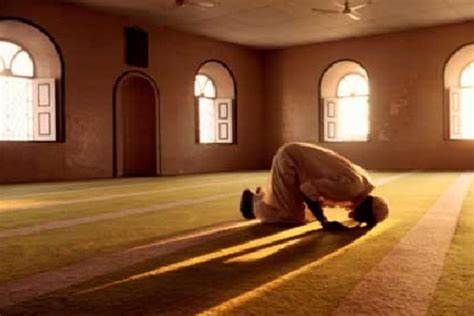

الصلاة

الصَّلَاةُ فِي الإِسْلَام هي الركن الثاني من أركان الإسلام، وفي الحديث: «عن ابن عمر رضي الله عنهما قال: سمعت
رسول الله ﷺ يقول: "بُني الإسلام على خمسْ: شهادة أن لا إله إلا الله وأن محمداً رسول الله، وإقام الصلاة،
وإيتاء
الزكاة، وصوم رمضان، وحج البيت من استطاع إليه سبيلاً"». وقوله أيضاً: «رأس الأمر الإسلام، وعموده الصلاة، وذروة
سنامه الجهاد في سبيل الله»، وهي الفرع الأول من فروع الدين عند الشيعة والصلاة واجبة على كل مسلم، بالغ، عاقل،
ذكر
كان أو أنثى، وقد فرضت الصلاة في مكة قبل هجرة النبي محمد إلى المدينة المنورة في السنة الثانية قبل الهجرة،
وذلك
أثناء الإسراء والمعراج.
في الإسلام تؤدى الصلاة خمس مرات يومياً فرضا على كل مسلم بالغ عاقل خالي من الأعذار سواء كان ذكرًا أو أنثى.
بالإضافة لصلوات تؤدى في مناسبات مختلفة مثل: صلاة العيدين وصلاة الجنازة وصلاة الاستسقاء وصلاة الكسوف. والصلاة
هي
وسيلة مناجاة العبد لربه، وهي صلة بين العبد وربّه.

وهذه خطوات توضح كيفية الوضوء للصلاة:
1- استحضار النية في القلب.
2- التسمية: فيقول: «باسم الله».
3- غسل الكفين (ثلاث مرات).
4- التسوُّك: ومحله عند المضمضة.
5- التمضمض، والاستنشاق، والاستنثار (ثلاث مرات).
- والمضمضة: هي إدخال الماء في الفم وتحريكه.
- والاستنشاق: هو جذب الماء بالنفس في الأنف.
- وتكون المضمضة والاستنشاق بغَرْفة واحدة.
- والاستنثار: هو إخراج الماء من الأنف.
6- غسل الوجه (ثلاث مرات) مع تخليل اللحية.
- وحدّ الوجه: من منابت شعر الرأس إِلى أسفل الذقن طولًا، ومن الأذن إِلى الأذن عرضًا.
7- غسل اليد اليمنى من أطراف الأصابع إلى المرفق ثلاث مرات، ثم اليسرى كذلك.
8- مسح الرأس: ويكون بتبليل اليد بالماء، ثم مسح مقدَّم الرأس إِلى قفاه، ثم الرجوع إِلى مقدَّمه مرة أخرى
(مرة
واحدة).
9- مسح وسط الأذنين بالسبابتين، وظاهرَهما بالإبهامين (مرة واحدة).
10- غسل الرجل اليمنى إِلى الكعبين (ثلاث مرات)، ثم اليسرى كذلك.